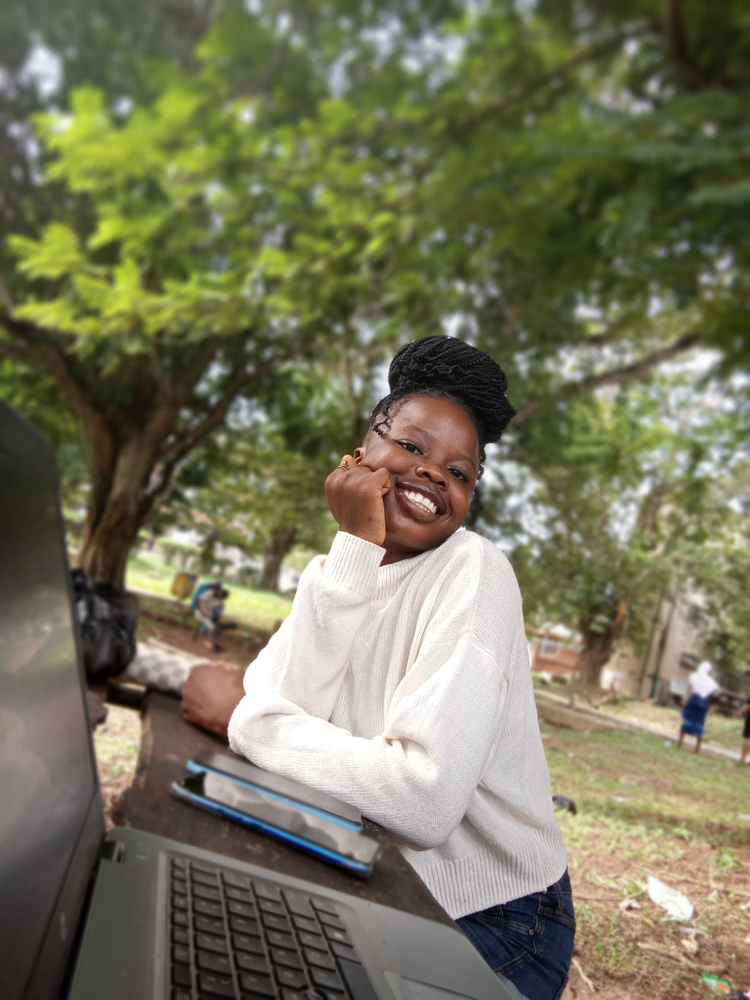

Dear Omolade,
Today is about you, and I pray this new year brings clarity, peace,
and direction into your life. May everything start making more
sense, and may things begin to align for you in the best way
possible.
I don’t think you realize how special your existence is sometimes. The way you care, the way you listen, the way you show up for people quietly. Those little things matter more than you know.

If you remember nothing else from this page, just remember that you are truly appreciated.
A Prayer For You” I pray this new chapter of your life brings you peace that stays, happiness that feels genuine, and love that never makes you question your worth. I pray your heart never carries more than it should. May Allah ease every hidden worry, heal every silent pain, and replace your sadness with comfort. I pray doors open for you in places you never expected. May your dreams find their way to you gently, and may you never lose the softness that makes you who you are. And when life becomes overwhelming, I pray you always find light, strength, and reasons to keep smiling. May this new age bring you closer to everything good written for you.